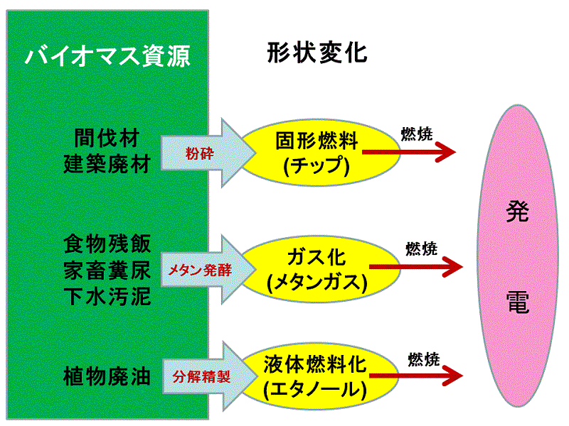
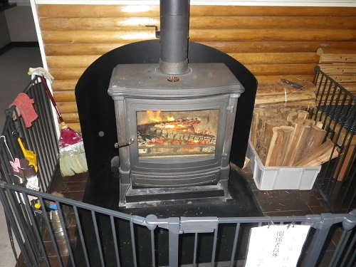

「バイオマス」とは、動植物等の生物から作り出される有機性のエネルギー資源で、一般に化石燃料を除くものを総称しています。
「バイオマス発電」とは、そのエネルギー資源を直接燃焼したり、あるいは一度ガス化して燃焼したりして発電するしくみです。つまり、バイオマス燃料を燃焼することでタービンを回し、発電機を動かすことで発電を行います。

バイオマス資源による発電
○固形燃料（木質燃料）
木くずや間伐材（森林の育成のために間引いた木材）、可燃性ごみなどを燃料として使います。木くずなどは「木質ペレット」という小さい固形状の燃焼物に、間伐材などは粉砕して「木質チップ」等に加工することで、輸送しやすくするとともに燃焼効率を高め、エネルギー変換効率を高めることができます。
○液体燃料（バイオエタノール、バイオジーゼル）
ガソリンの代わりに、トウモロコシやサトウキビと言った安い穀物を発酵・濾過してアルコールを作り出し、乗用車・小型トラック用のガソリンを代替するバイオマスアルコール燃料として利用します。また、精製した廃油から作られるディーゼルエンジン用燃料などもあります。
○ガス化燃料（バイオガス）
家畜の糞尿や生ごみ、下水汚泥などを燃やすのではなく発酵させることで、メタンなどのバイオガスを発生させ利用します。
日本では戦前はむろん、1950年代までは主要エネルギー源であり、炊事や風呂焚きはほとんど薪によって行われていました。高度成長期に薪は一気に石油や電気にとって代わられ、1970年代には都市部で薪を日常の燃料に使う家庭はほぼ消滅しました。
ところが、カーボンニュトラルの観点からバイオマスとしての薪は見直され、今や、薪ストーブや囲炉裏など薪を使う製品が、趣味の生活用品として憧れの対象になっている面もある。

奈良県 東吉野ふるさと村の薪ストーブ